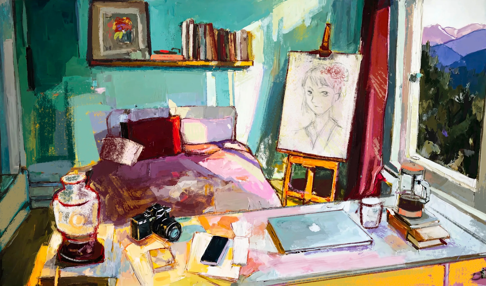

Shina Foo's interactive room
Shizudio is a room I'm slowly furnishing with the things I make, notice, and return to.
It holds my work, images, experiments, tools, songs, and small evidence of how I see the world.

Welcome to my room. Click an object to explore a part of me.
📖
The Shelf
Essays & Writing
🎨
The Canvas
How I make by hand
✿
The Flower
Motif, tenderness, ambiguity, decay
🛏
The Bed
Who I am becoming
✦
The Lamp
AI, tools, automation, building as creative practice
🪟
The Window
How to reach me
📷
The Fujifilm Camera
How I notice
☕
The French Press
My taste, references, visual world
📱
The Phone
Thoughts & Updates
💻
The Laptop
What happened when my inner world touched real systems
🎶
The Record
Emotional weather / what I return to